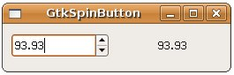

| GtkSpinButton是個可以讓使用者輸入數值的元件，具有上下調整的箭頭按鈕，可以設定可輸入數值的上下限、小數位數與按下箭頭的遞增（減）值等，雖然名為Button，但GtkSpinButton實際是衍生自GtkEntry： GtkWidget
+----GtkEntry +----GtkSpinButton 您可以使用gtk_spin_button_new()函式來新增一個GtkSpinButton： GtkWidget* gtk_spin_button_new(
GtkAdjustment *adjustment, gdouble climb_rate, guint digits); climb_rate是設定按下按鈕時，數值改變的加速度，為一個0.0到1.0的設定，digits則是設定顯示數值的小數位數，這個函式還需要一個GtkAdjustment，這個物件用以控制數值的範圍、上下限、遞增（減）值等： GtkObject* gtk_adjustment_new(gdouble value, // 初始值
gdouble lower, // 下界值 gdouble upper, // 上界值 gdouble step_increment, // 遞增（減）值 gdouble page_increment, // 對GtkSpinButton較無意義 gdouble page_size); // 對GtkSpinButton較無意義 GtkAdjustment也可以用於其它的Widget，page_increment是按下PageDown、PageUp時的端增（減）量， page_size是元件可以顯示的大小，但就GtkSpinButton而言，僅step_increment的設定有意義。 您也可以使用gtk_spin_button_new_with_range()，直接指定最小值、最大值與遞增（減）值即可，這個函式會自動產生GtkAdjustment： GtkWidget* gtk_spin_button_new_with_range(gdouble min,
gdouble max, gdouble step); 在 GtkHBox 與 GtkVBox 就曾經使用過GtkSpinButton，當時使用的就是gtk_spin_button_new_with_range()函式來建立GtkSpinButton，在這邊改寫一下那邊的範例，改為自行建立GtkAdjustment並使用gtk_spin_button_new()函式來新增一個GtkSpinButton：
#include <gtk/gtk.h> 一個執行的結果如下所示：  |